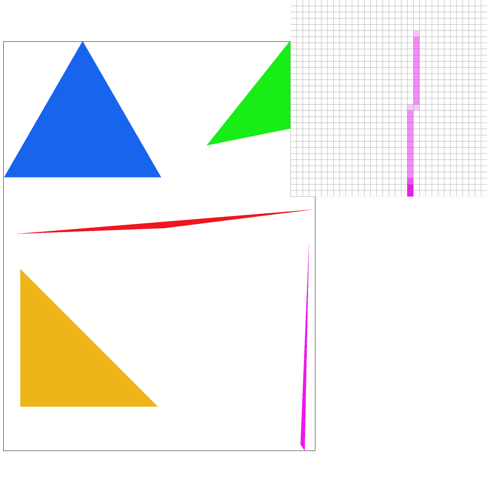
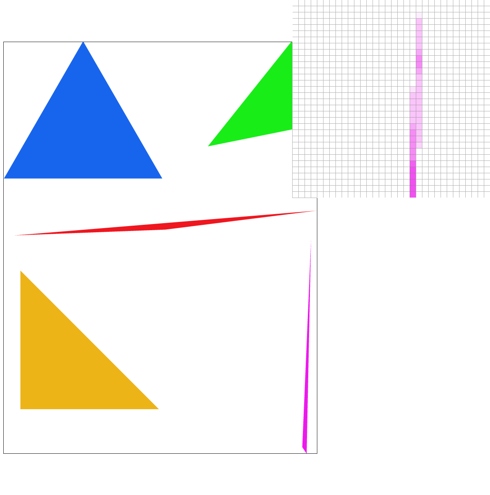
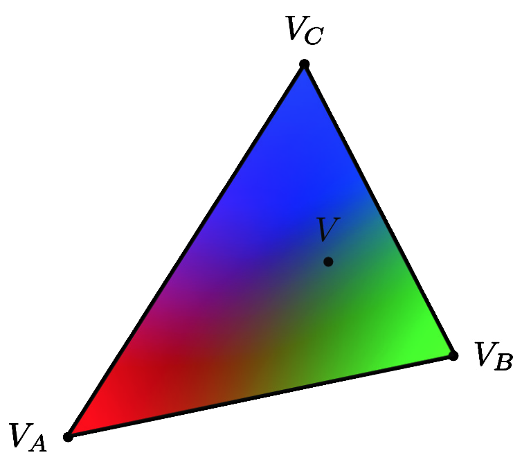
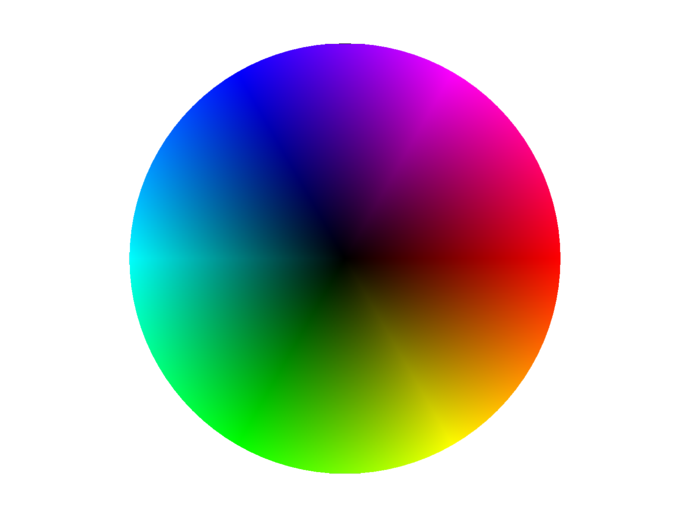
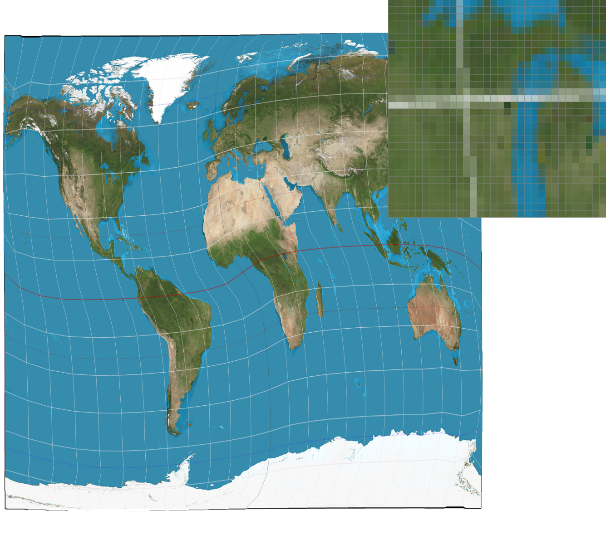
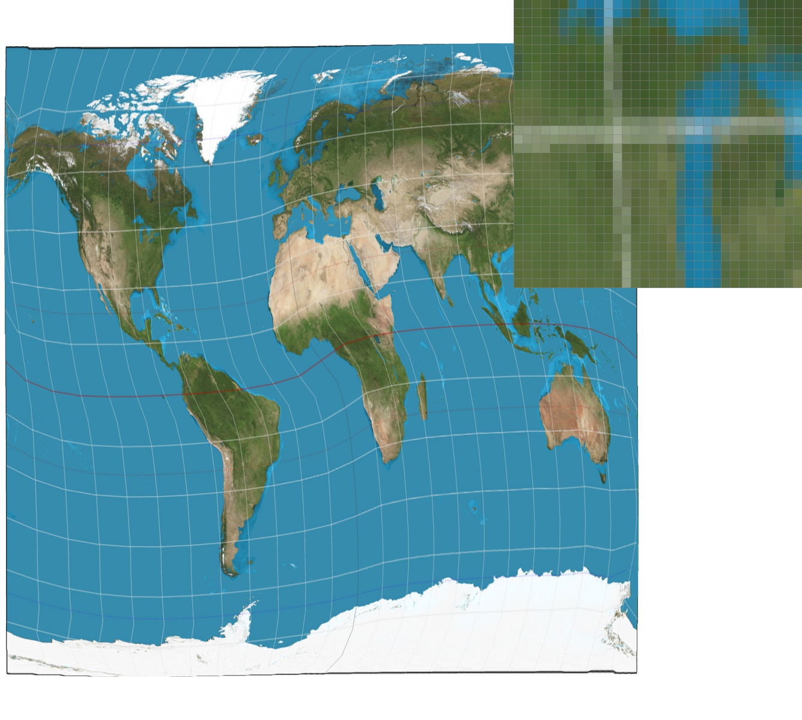
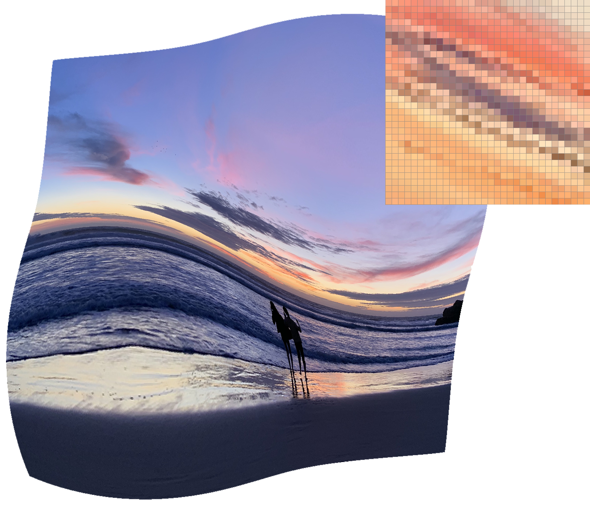
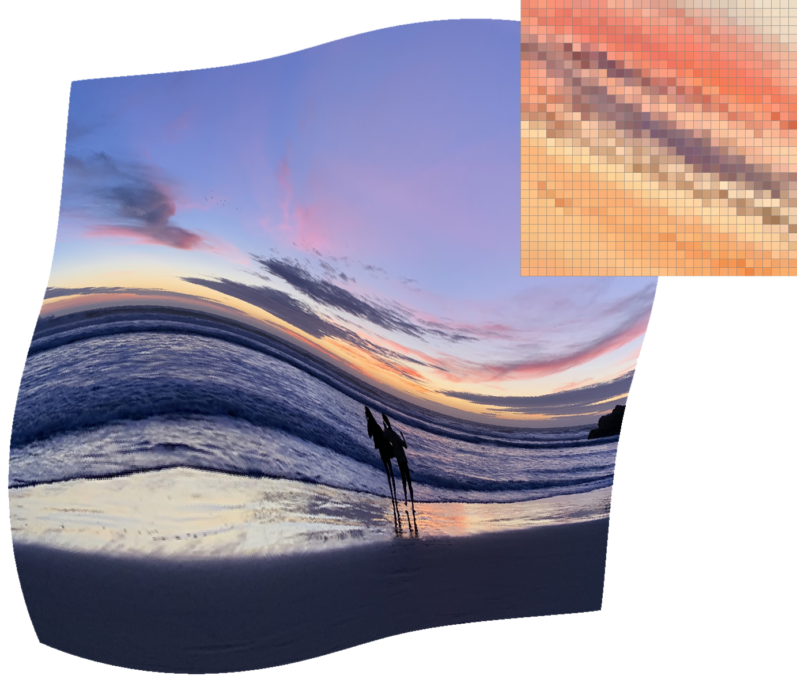

Rasterizing single-color triangles
Starting from the minimum x and y input triangle points to the maximum x and y input triangle points, sample each point at the center of each pixel within these bounds, checking whether or not this point is in the triangle or not. If it is, fill in the pixel with the input color.
Checking if the point is in the triangle or not:
Compute the line equation between some input triangle point Pi and some other input triangle point Pi+1, given by
Li(x, y) = -(x - xi)(yi+1 - yi) + (y - yi)(xi+1 - xi), where x and y are the x and y coordinates of the sampled point. This equation is the dot product of V and N, where V is the line tangent vector between Pi and the sampled point, and N is Pi’s normal vector.
Compute the line equations between each input triangle point in both clockwise and counterclockwise order.
If Li(x, y) >= 0 for all i in either clockwise or counterclockwise order, the sampled point is considered inside or on the edge of the triangle and is thus filled in with the input color.
This algorithm checks each sample only within the bounding box of the triangle and is thus equal to (and no worse) than one that checks each sample within the bounding box of the triangle.

Antialiasing triangles
Supersampling
Supersampling is an anti-aliasing method done by sampling multiple locations within a pixel and averaging their values. Averaged color values contribute to smoother transitions along edges, reducing the appearance of jaggedness/pixelization (also known as “jaggies”).
Populating the Supersample Buffer
In my implementation of this method, I start by rasterizing a high resolution image to a supersample_buffer, which is a Color vector that stores the values of multiple subpixels within a pixel; the number of subpixels sampled per pixel is determined by the sample_rate. The values stored in each subpixel is either an input color if the sampled subpixel is in the triangle, and the color white if it is not in the triangle.
Initialize all values in the supersample_buffer to the color white.
For every pixel within the bounds of the desired triangle’s min and max points, sample each subpixel, checking if it is in the triangle or not
If the subpixel is in the triangle, change the value at its corresponding supersample_buffer coordinate to be the input color
Downsampling
Once the supersample_buffer has been filled, the image needs to be downsampled to populate correct average values of the framebuffer. This downsampling is done in the resolve_to_framebuffer function. For every pixel within the bounds of the triangle’s min and max points, compute the average color values of each one of its subpixels. Render the resulting color values every time the sample_rate changes
Comparisons
|
Sample rate of 1 per pixel
|

Sample rate of 4 per pixel
|

Sample rate of 16 per pixel
|
Barycentric coordinates
Barycentric Coordinates
Barycentric Coordinates are a triangle coordinate system used to obtain smoothly varying values across a surface. These values are calculated through linear interpolation of values at the vertices of the triangle (which may denote position, color, texture coordinates, etc).
Implementation
In the following image, VA, VB and VC hold a red, green, and blue color values, respectively.

The color at V is found by first calculating the alpha, beta, and lambda “weights,” where each scalar weights correspond to one vertex of the triangle. We can then calculate the red, green, and blue values, which is equivalent to the sum of each of the color values of each vertex multiplied by its corresponding weight
(i.e. V.red = VA.red * alpha + VB.red * beta + VC.red * lambda).

Pixel sampling for texture mapping
Pixel Sampling
When a texture is mapped to a triangle mesh, each (x, y) pixel location of the triangle is mapped to the corresponding "texel" location within the (u, v) coordinates of our texture image. To find the corresponding values, we use Barycentric Coordinates.
Implementation
Barycentric coordinates are implemented the same way as in the previous task, except now, the values being evaluated are pixel locations rather than rgb color values.
Once the corresponding (u, v) values are calculated, we can choose to use either Nearest pixel sampling or Bilinear pixel sampling. Nearest pixel sampling simply samples the closest texel to the sampled point. Bilinear pixel sampling interpolates between the 4 nearest texels.
Examples
|
Nearest sampling at sample rate 1
|

Nearest sampling at sample rate 16
|
|
Bilinear sampling at sample rate 1
|

Bilinear sampling at sample rate 16
|
At a sample rate of 1, bilinear sampling produces a better image; because this method involves averaging 4 of the nearest texels, it’s able to capture more data about the original texture image, even if the texture has a higher frequency than the sample rate. Nearest sampling, on the other hand, may miss fine details that bilinear sampling would be able to preserve.
At a sample rate of 16, there is less of a difference between the two sampling methods; because the frequency of the texture image is now closer to the sampling rate, less fine details may be missed using either method.
Level sampling with mipmaps for texture mapping
Level Sampling
In the case where areas of our triangle mesh are at different depths in 3D space, we can apply level sampling to adjust the resolution depending on depth levels, where areas far away are downsampled and rendered at low resolutions and areas that are up close are rendered at higher resolutions. Application of level sampling can save computation time and filter minification.
Types of Level Sampling
Zero: sample all points at a depth level of 0
Nearest: compute the nearest integer level
Linear: compute a weighted sum of levels
Implementation
Calculate the distance between the sampled point and its adjacent points; larger distances indicate that the sampled area is farther away, and is at a higher depth level.
Calculate the Barycentric Coordinates of (x, y), (x + 1, y), and (x, y + 1), using these coordinates to calculate the (u, v) texel coordinates for each point
Calculate (du/dx), (dv/dx), (du/dy), and (dv/dy)
Apply these values to the following equations:
Sample the texture map at the appropropriate depth level.
Comparisons
Supersampling has slower computation speed, increased memory usage, and greater anti-aliasing power.
Bilinear sampling compared to nearest sampling has slower computation speed, increased memory usage, and greater anti-aliasing power
Level sampling results in higher computation speed, increased memory usage, and greater anti-aliasing power.
Examples
|

Level Zero with Nearest sampling
|

Level Zero with Bilinear sampling
|
|
Nearest Level with Nearest sampling
|
 Nearest Level with Bilinear sampling
Nearest Level with Bilinear sampling
|